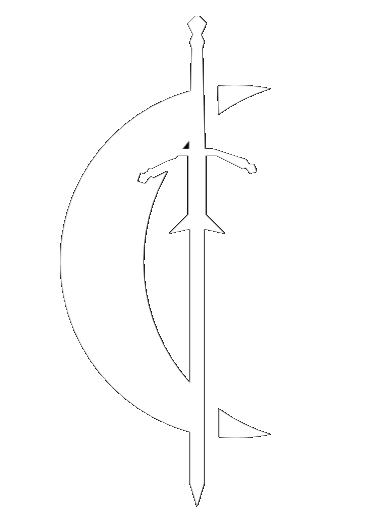
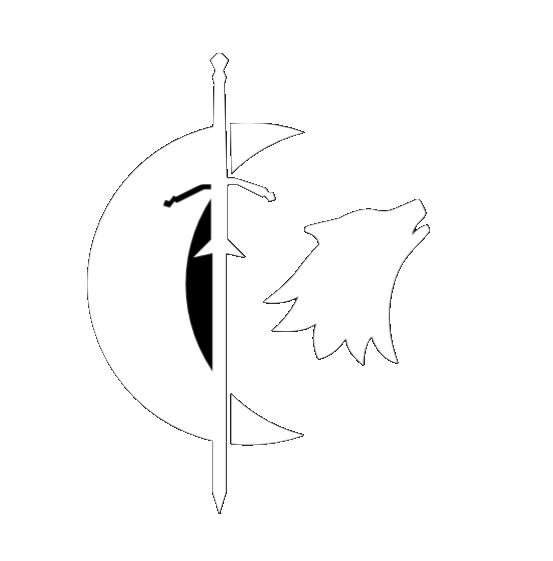
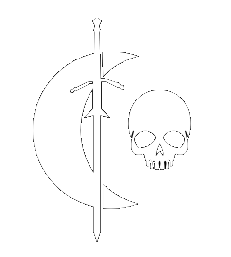
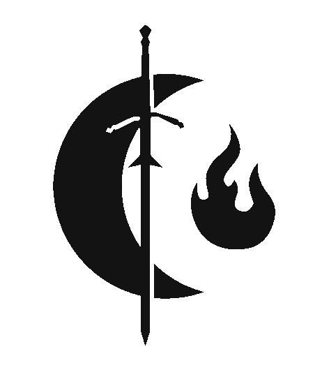
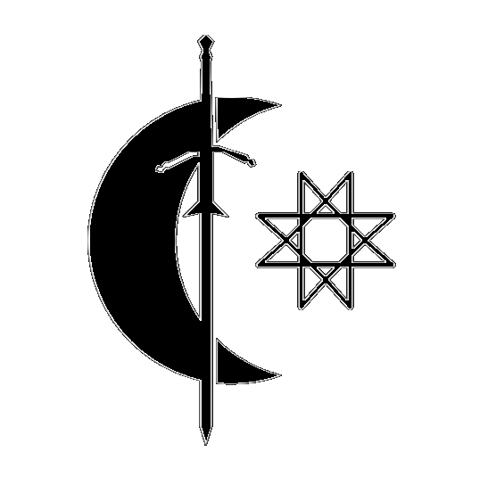
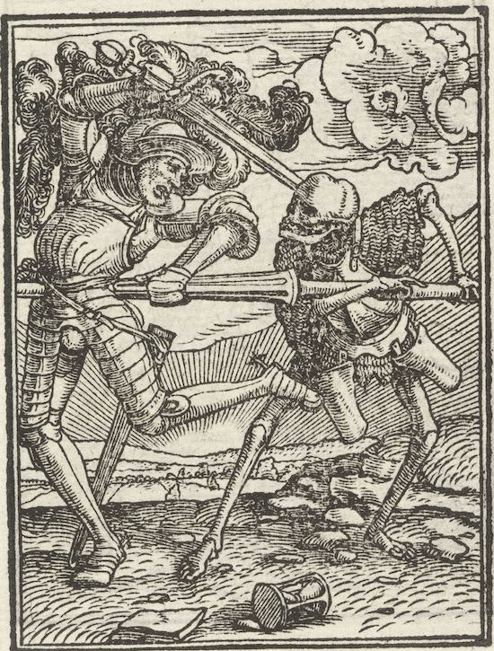
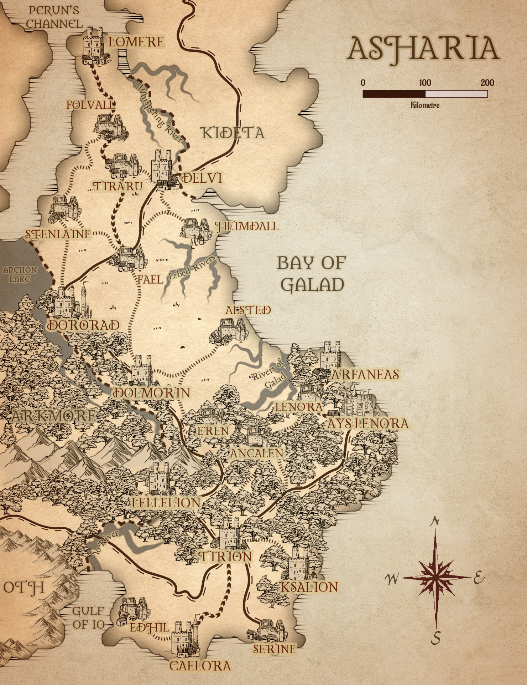

OTH
Asharia is the remaining outpost of the elves of Allanar. After the invasion of the humans, the elves retreated and established a fortress-like nation. Asharia is home to many port cities and is the home of most arcane research and development in the continent. Citizens of Asharia are generally wealthy nobility or merchants, or highly intelligent wizards and arcane casters. This country is also home to the headquarters of the Order of Eleutheria, established after the reigning elves brokered a treaty with the humans.
Geography
The Serpentines
This remote area began in the cold, forbidding lands along the great ice sheets and continued south toward the northeastern shores of the Sea of Fallen Stars, collectively known as the Cold Lands. It was bordered on the west by the mountain-hemmed land of Vaasa and stretched east to the vast steppes of the Hordelands. This remote area began in the cold, forbidding lands along the great ice sheets and continued south toward the northeastern shores of the Sea of Fallen Stars, collectively known as the Cold Lands. It was bordered on the west by the mountain-hemmed land of Vaasa and stretched east to the vast steppes of the Hordelands.
The Wastes
This remote area began in the cold, forbidding lands along the great ice sheets and continued south toward the northeastern shores of the Sea of Fallen Stars, collectively known as the Cold Lands. It was bordered on the west by the mountain-hemmed land of Vaasa and stretched east to the vast steppes of the Hordelands. This remote area began in the cold, forbidding lands along the great ice sheets and continued south toward the northeastern shores of the Sea of Fallen Stars, collectively known as the Cold Lands. It was bordered on the west by the mountain-hemmed land of Vaasa and stretched east to the vast steppes of the Hordelands.
Governance
Knights of Donn
The Knights of Donn are a quasi-religious military order which oversee the governance of Oth. The Knights were first organized after Oth was cursed by a powerful fiend, as a group devoted to protecting the remaining people of Oth from the new threats borne of the curse. As time progressed, the Knights have turned to darker means of their own to better carry out their mission. In this pursuit, they devoted themselves to Donn, the God of the Otherworld and the Dead, and frequently call on him for guidance or aid.
The Knights are composed of four orders: the Deathless, the Beast, the Mutant and the Arcanist. The leaders of these orders, the Xana, serve as governers and advisors to the Magna Xana, who is both the leader of the Knights and the supreme authority in Oth. Each Xana, upon ascension to their position, takes on the traditional name of the order, the name of its first and founding member. These names are Mortas, Aethelwulf, Vukasin and Zenasha. The position of both Xana and Magna Xana is passed by nomination, where the current holder of the position names a successor from among their order. This heir will frequently be trained directly by their predecessor, and will serve as a sort of assistant to their respective Xana.
Xana
| Name | Crest | Description |
Evillian |
 |
The Magna Xana is chosen via appointment by a predecessor. Any Knight, from any Order, may be chosen
as a successor, and is then trained by Magna Xana for a minimum of five years before they are able
to formally take on the role as heir. The Magna Xana is distinguished from their peers by
the Othanian Crest which adorns their armour and weaponry.
|
Aethelwulf |
 |
Knights of the Order of the Beast harness the raw animal strength of powerful beasts
to hunt down their enemies. These abilities can be chanelled through spiritual communion,
beast taming or complete transformation.
Knights of the Beast
must undergo intense training in order to control their animal aspect.
|
Mortas |
 |
The Order of the Deathless are the oldest and most respected among
the Knights of Donn, and most Magna Xana begin as members of this Order.
Deathless Knights harness the abilities of undeath, using them to
summon allies, travel within the spirit world and the shadows as well as
commune with spirits and dead souls.
|
Vukasin |
 |
The Order of the Mutant is a highly experimentative, tempermental and unpredictable order.
They craft dangerous and often deadly concotions in order to weaken their foes and enhance
their own abilities, and frequently undergo risky expirements to bolster power or reveal
latent arcane talents. Mutant Knights tend to be skilled alchemists as well as combatants,
and are regarded with caution by other Knights.
|
Zenasha |
 |
Knights of the Order of the Arcanist focus on developing arcane talents to better
accomplish missions and vainquish foes. These arcane talents, though sometimes gained
through scholarly research or innate talents, are frequently accessed through
deals made with fiends or other powerful deities. Though their sources may differ
all Knights of the Arcanist have access to magical abilites.
|

Character Creation
This remote area began in the cold, forbidding lands along the great ice sheets and continued south toward the northeastern shores of the Sea of Fallen Stars, collectively known as the Cold Lands. It was bordered on the west by the mountain-hemmed land of Vaasa and stretched east to the vast steppes of the Hordelands. This remote area began in the cold, forbidding lands along the great ice sheets and continued south toward the northeastern shores of the Sea of Fallen Stars, collectively known as the Cold Lands. It was bordered on the west by the mountain-hemmed land of Vaasa and stretched east to the vast steppes of the Hordelands.
Classes
| ORIGIN | CLASSES |
|---|---|
| ORDER OF THE DEATHLESS |
|
| ORDER OF THE BEAST |
|
| ORDER OF THE MUTANT |
|
| ORDER OF THE ARCANIST |
|
| OTHANIAN NATIVE |
|
Species
| ORIGINS | RACES |
|---|---|
| DECIMIRE | Tiefling, Drow Elf, Aasimar (Fallen) |
| THE WASTES | Changeling, Tiefling, Drow Elf, Aasimar (Fallen) |
Map
